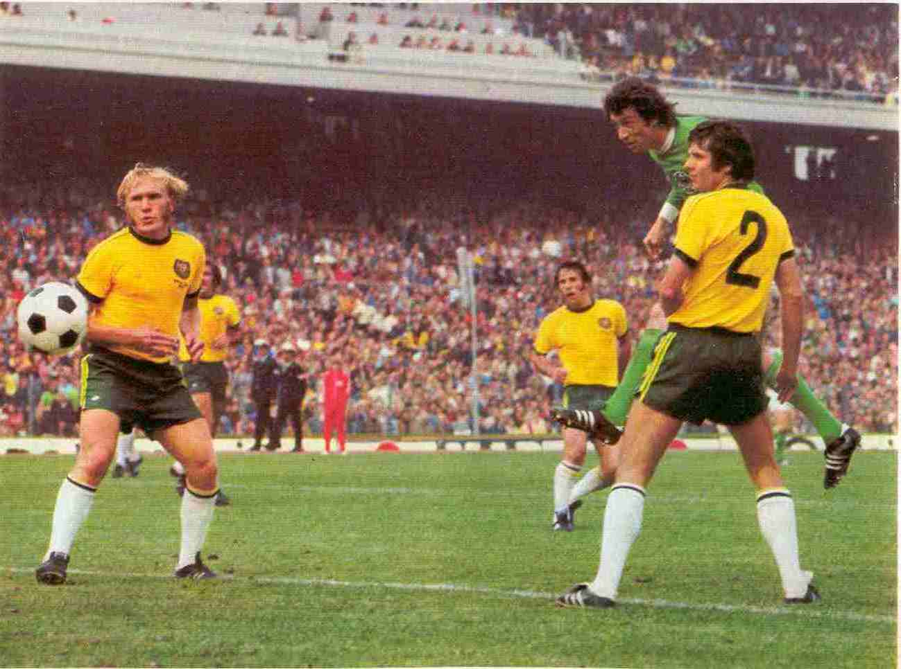
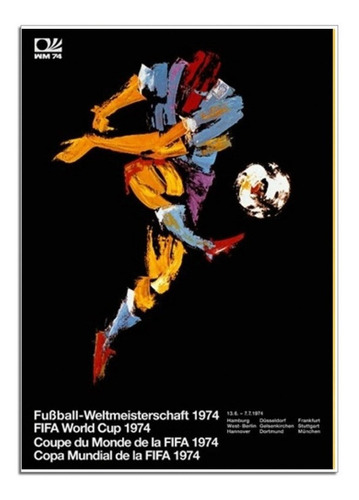

A Copa do Mundo FIFA de 1974 foi a décima edição da Copa do Mundo FIFA de Futebol, que ocorreu de 13 de junho até 7 de julho de 1974.
O evento foi sediado na Alemanha Ocidental, que conquistou o título. Dezesseis seleções nacionais foram qualificadas para participar desta edição do campeonato, sendo 9 delas europeias (Alemanha Ocidental, Alemanha Oriental, Iugoslávia, Escócia, Holanda, Suécia, Bulgária, Polônia e Itália), 5 americanas (Chile, Brasil, Uruguai, Argentina e Haiti), 1 africana (Zaire) e 1 oceânica (Austrália). A Final da Copa do Mundo FIFA de 1974 foi disputada entre a Holanda e a Alemanha Ocidental.
A partida foi realizada em 7 de julho às 16h, no Estádio Olímpico de Munique, com um público estimado em 75 200 pessoas, com a vitória da Seleção Alemã.

A Seleção Brasileira da Copa de 1974 marcou apenas seis gols em sete partidas. Uma média de 0,85 gol por partida.
A situação estava tão tensa na Alemanha em 1974 que em todas as esquinas existiam guardas e cães de guarda vigiando o movimento. Dois anos antes, terroristas palestinos mataram 11 judeus nas olimpíadas de Munique
O “deus” do futebol brasileiro, Pelé, não quis disputar a Copa da Alemanha, para protestar contra o regime militar que governava o Brasil, na década de 70. O próprio jogador declarou isso recentemente num programa de televisão.
Franz Beckenbauer capitão da seleção campeã mundial elogiou excessivamente a atuação do lateral Berti Vogts na final contra a Holanda. Para o Kaiser, Vogts anulou Cruyff. Os dois também foram técnicos da Alemanha. Beckenbauer em 1986 e 1990 e Vogts na Copa de 1994.
A Seleção Brasileira só marcou o seu primeiro gol na Copa de 1974 na terceira partida, quando enfrentou o Zaire e venceu por 3 a 0. Antes, o time de Zagalo empatou com a Iugoslávia e com a Escócia.
A Iugoslávia aplicou a maior goleada da Copa de 1974. A vítima foi a humilde Seleção do Zaire. Os iugoslavos golearam os africanos por 9 a 0.
Os jogadores holandeses alcançaram grande popularidade na Copa de 1974. Cruyff e companhia aproveitaram o sucesso e começaram a cobrar por autógrafos. Graças as críticas vorazes da imprensa, os boleiros da Holanda pararam de cobrar
A derrota na final da copa abalou muito o craque holandês Johan Cruyff, que prometeu nunca mais disputar uma Copa do Mundo. E cumpriu sua promessa.
Ademir da Guia, craque brasileiro e maior jogador da história do Palmeiras, só teve uma chance na Seleção Brasileira na Copa de 1974. Foi na disputa pela terceira colocação, quando o Brasil perdeu para a Polônia por 1 a 0
Franz Beckenbauer, líbero alemão na Copa de 1974, disputou cinco copas do Mundo. Três como jogador e duas como técnico. Em todas, chegou no mínimo às semifinais.

Poster da Copa do Mundo — Alemanha 1974